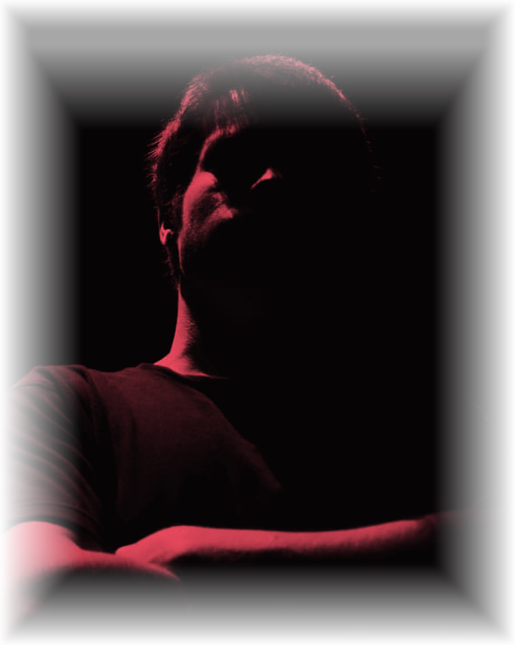

Billar online
Un juego de billar para echar partidas en el tiempo libre, con salas multijugador y una tabla de puntuaciones para llevar la cuenta de quién manda.
Probar prototipo →// técnico de redes · desarrollador de videojuegos
Siempre aprendiendo, con esfuerzo y compañerismo. Entre routers, redes de fibra y motores de videojuego.

Foto: Salvador Ruiz// sobre mí
Técnico de sistemas y redes con formación adicional en desarrollo de videojuegos 3D. Me muevo con la misma soltura supervisando una red nacional de fibra que programando un proyecto en Unity o Unreal Engine. Honestidad, compañerismo y ganas de seguir aprendiendo, siempre.
// habilidades
// trayectoria
2022 — 2024
Grado Superior (FP II)
Generalista 3D. Desarrollo de videojuegos en Unity y Unreal Engine. Montaje y edición de vídeo.
2016 — 2020
Grado Superior (FP II)
Gestión de servidores Windows y Linux. Redes Cisco. Programación web y SQL.
2023
Curso · Impartido por la EOI
Formación generalista en Unreal Engine 5 y desarrollo individual de proyectos.
2025 — actualidad
Vodafone · Inneria Solutions
Supervisión de la red nacional de fibra y coaxial, resolución de incidencias, gestión de alarmas en equipos Nokia y Huawei, coordinación con técnicos de campo.
2023 — 2024
Fundación MEDAC
Programación de una sala virtual de conferencias en C#, disposición de assets y configuración de sonido del proyecto.
2021 — 2022
TM Digital
Configuración de redes y telecomunicaciones, atención al cliente, instalación de redes locales y optimización de sistemas.
// proyectos
Mi vuelta a la programación por gusto, fuera del trabajo. Esta sección crecerá con el tiempo.
Un juego de billar para echar partidas en el tiempo libre, con salas multijugador y una tabla de puntuaciones para llevar la cuenta de quién manda.
Probar prototipo →Un escondite visto desde arriba: te disfrazas de un objeto de la sala para camuflarte entre los muebles reales, mientras alguien más intenta encontrarte.
Probar prototipo →Un Duck Hunt infernal: demonios voladores que hay que cazar antes de que escapen, con rondas cada vez más difíciles y munición limitada.
Probar prototipo →Una aplicación para visualizar audio en tiempo real y experimentar con edición de sonido. Proyecto personal para aprender procesamiento de audio desde cero.
// contacto
¿Tienes una oportunidad, un proyecto o simplemente quieres saludar? Escríbeme.